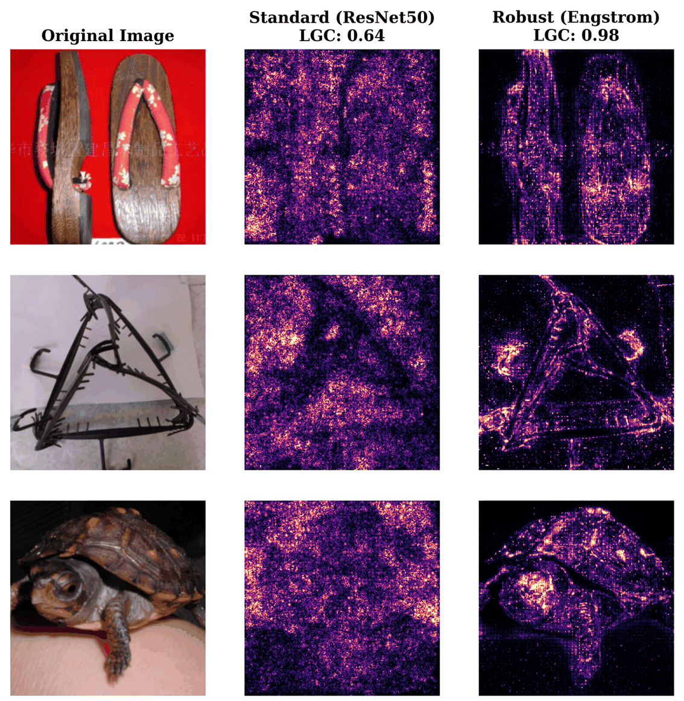

When Resize-Based Input Diversity Helps or Hurts Transfer Attacks
1University of Trento · 2Anhui University
Input Diversity applies a random resize and pad at every attack iteration, and it is enabled by default in most transfer attacks. Hold the attack and the targets fixed, change only the surrogate, and raising the DI probability helps standard surrogates while it hurts robust ones.
Maybe two arbitrary models were compared? We fix the architecture (ResNet-50) and the recipe (PGD-AT) and vary only the adversarial-training budget. The sign flips between the first two settings, and the harm is graded rather than binary.
Tab. 7 · target Swin-B, N=500, 3 seeds, all-images basis. Effects in pp.
DI is a resize composed with a translation. A 2×2 factorial separates them. On robust surrogates the resize main effect is about four times the translation effect, and the interaction is the one term whose interval contains zero, so the two factors do add and the resize carries the harm.
Tab. 12 · 6 sources × 3 targets, N=1000, 5 seeds, p=1, all-images basis, r > 1. Bars are point estimates; thin lines are 95% image-paired bootstrap intervals.
DI averages the gradient over transformed views, trading a bias against a variance reduction. We measured both directly. The displacement is comparable across the two groups; the variance reduction is not.
A standard surrogate's input gradient is scattered and high-frequency. A robust one is spatially consistent and tracks the object. That difference is what the averaging acts on.

Fig. 2 (ImageNet) · Columns: the original image, the standard ResNet-50 gradient (LGC 0.64), and the robust Engstrom gradient (LGC 0.98).
Relative to a single clean gradient. Below 1 means DI reduced the variance.
Tab. 14 · m=20 EOT draws, image-bootstrap intervals. All six standard ratios lie entirely below 1 and eight of the nine robust ones entirely above.
How stable a surrogate's gradient is under a tiny input perturbation. Measurable before any attack is run.
| Model | HF ratio | LGC |
|---|
Tab. 9 · N=200 images, K=5 probes at 1/255. HF is a ratio of log-magnitudes, not of energies.
Probe the surrogate's LGC with five local gradient queries, compare against a threshold fixed in advance, and switch. The threshold, the probe scale and the sample count were frozen at their published values, and the per-surrogate predictions were hashed before any held-out attack was run.
Sec. 5 · The binary choice costs 0.95 pp [0.50, 1.42] against the best grid value on the one standard surrogate where the two differ, and zero on both robust ones. The curves are monotone in p, so there is no interior optimum to miss.
Five standard architectures and two adversarial-training recipes not in the development set. The frozen rule matched the sign on all seven; six of the seven effects are individually resolved.
| Held-out surrogate | LGC | rule | measured D (pp) | 95% CI |
|---|
Tab. 19 · N=1000, 5 seeds, r=0.9, source-and-target clean-correct basis.
DI degrades all ten on the robust surrogate and helps nine of ten on the standard one. These attacks share images, models and algorithmic ancestry, so this is a dependent panel and not ten independent observations. The tally is a description; the pooled statistics below are what carry the weight.
| Attack | venue | robust source | standard source |
|---|
Tab. 5 · Engstrom / ResNet50 → Swin-B, N=1000, 5 seeds, all-images basis. D in pp.
Tab. 6 · The mean pairwise correlation of the per-image effect vectors is 0.12–0.15, giving an effective 4.2–4.9 independent attacks rather than ten. An image-block sign-flip permutation test gives p < 1e−4 on three of the four cells and p = 0.003 on the fourth.
The effect is the claim we stand behind. The mechanism is a bounded candidate and the rule is preliminary. These are the places where each runs out.
@article{jiang2026the,
title = {The Scissors Effect: When Resize-Based Input Diversity Helps or Hurts Transfer Attacks},
author = {Yuhang Jiang and Xiaojing Chen},
journal = {Transactions on Machine Learning Research},
issn = {2835-8856},
year = {2026},
url = {https://openreview.net/forum?id=b4pCcgJM0M}
}
Every number on this page is transcribed from the accepted manuscript and labelled with the table it comes from. A difference between two attack success rates is reported in percentage points (pp); % is used for rates, image fractions and relative changes.